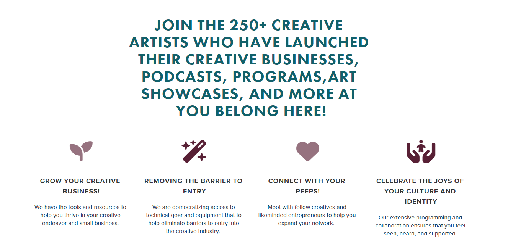
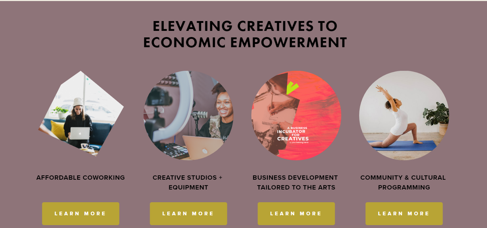

New Home Page - You Belong Here
A brand new home page was one of the main features I built during my internship with You Belong Here, a local community organization. Like the Membership Page, I built this project on Squarespace, though it is similarly heavily customized. In addition to development, I was also asked to consult on the UX flow of the page. I don’t have formal training in UX design, but I drew on my design and marketing background, and researched best practices for landing pages to put together my suggestions.
- Project Type: Internship
- Stack Used: Squarespace CMS, CSS / SCSS, CSS animation, JQuery plug-ins (researched and implemented, though not created, by me)
- Live: View Site

Project Purpose & Goals
The old home page (which you can still see here, not coded by me) lacked many of the features it needed to keep up with the business’s evolution. The business owner wanted a playful, interactive landing page that could show off a variety of offerings and house more dynamic calls to action.
Similarly to the Membership Page, many of her desired features were not easily created within Squarespace’s CMS components. My goal was to deliver an aesthetically pleasing, creative page look while ensuring responsiveness on all screen sizes.
Process & Problem Solving
I found certain elements of this page design challenging to deliver, because many of the aesthetics the business owner gravitated to would have been simple to create from scratch, but the content she wanted me to manipulate was pulled in via preset CMS components. To create layered animations using divs, for example, wasn’t possible when the animated element was part of a rigid summary block.
While Squarespace allows for completely custom coded elements (such as the pricing cards I made for the Membership Page), it’s harder for a normal user to go in and change the content in those sections. For a section with frequent content changes, this wouldn’t work well. My challenge was therefore to find ways to manipulate the existing reusable components without sacrificing style or function… (see how I solved this in next section).
Spotlight
I’m particularly proud of the animated section featuring the creative features of the space (third section down on the page). I simplified a fancy CSS animation effect that the business owner liked so that it worked on the image element within the summary block.

I also troubleshooted the responsiveness of this section using flexbox on the tablet view media query, which required targeting just the right selectors within a sea of pre-existing selectors. The business owner was pleased with how the section turned out aesthetically, and it retained the functionality of her being able to easily update the content.
Current Status
This site is live and close to being deployed as a replacement for the current home page design, but is still waiting on some content from the business owner.
On the development side, this affects a responsiveness issue on a last minute element the business owner wanted to add in - the “ad banner”, four sections down. I’m waiting on a mobile-friendly image that I can slip into the media query I’ve set up for mobile view.
Lessons Learned
Through working on Squarespace, I’ve learned to tailor my coding knowledge to a specific platform with unique limitations. In this project in particular, I was challenged to find custom solutions that bridged the functionality of reusable CMS components and more unique interactive aesthetics.
My problem solving skills were also tested thoroughly, as I regularly faced decisions that ranged from “how should I best set up this section of content for responsiveness?” to “are my JQuery plug-in’s interfering with each other on a single feature, and how can I troubleshoot this?”